Everything co-op members need to promote Go Vita in-store, online and with customers — logos, seasonal banners and posters, shelf signage, social media tiles and the latest Go Mag. All assets are print- and web-ready and free to use. To request any item, just ask our Member Support team and they'll pass it straight to Marketing.
Asset catalogue
Vector SVGs — scale cleanly from a shelf talker to a shopfront window with no loss of quality.
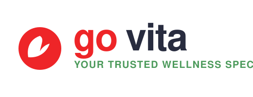
Primary logo
Logos · SVG · 520×200
Full-colour horizontal logo with leaf mark and positioning line. Default for light backgrounds.
Current
assets/marketing/govita-logo-primary.svg
Reverse logo
Logos · SVG · 520×200
White logo for dark or photographic backgrounds — banners, social overlays, signage on imagery.
Current
assets/marketing/govita-logo-reverse.svg
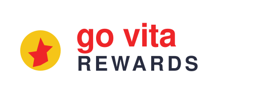
Go Vita Rewards lockup
Logos · SVG · 520×200
Loyalty-program lockup with gold star mark for Rewards sign-up and points promotions.
Rewards
assets/marketing/govita-rewards-logo.svg
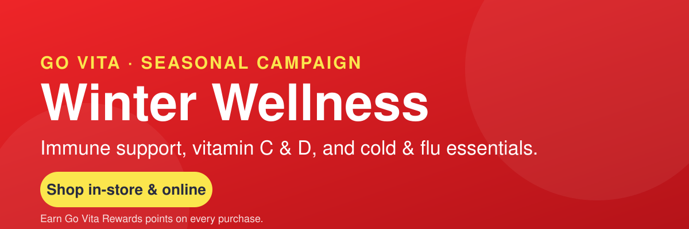
Winter Wellness banner
Web banners · SVG · 1200×400
Seasonal immune-support leaderboard for website hero, newsletter header and in-store screens.
Winter campaign
assets/marketing/banner-winter-wellness.svg
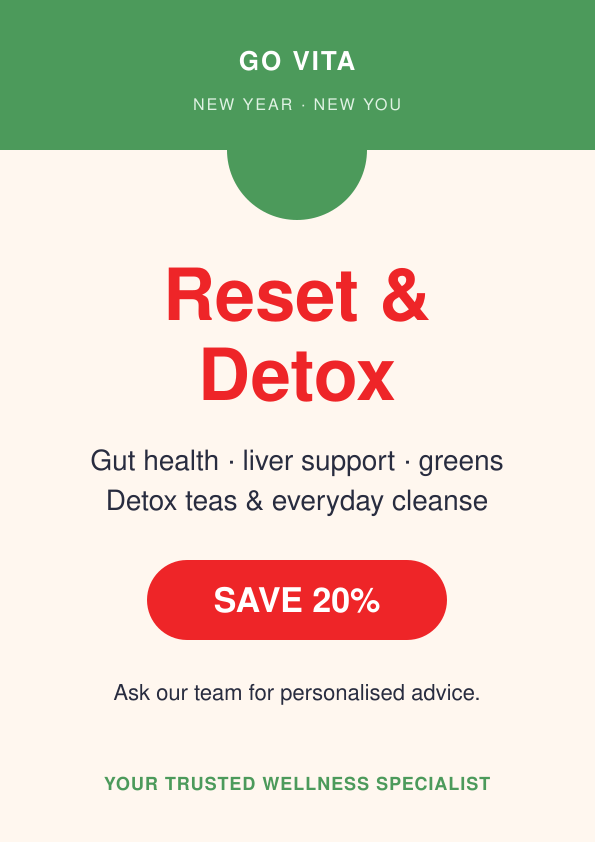
New Year Detox poster
Window posters · SVG · A4 (595×842)
Reset & Detox campaign with SAVE 20% flash. Store windows and entrance; scales to A3.
Jan–Feb campaign
assets/marketing/poster-new-year-detox.svg
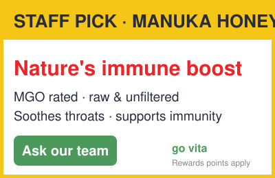
Manuka Honey shelf talker
Shelf signage · SVG · A6 (400×260)
Staff-pick shelf talker. Template adaptable to any hero product — swap the name and claims.
Evergreen
assets/marketing/shelf-talker-manuka-honey.svg
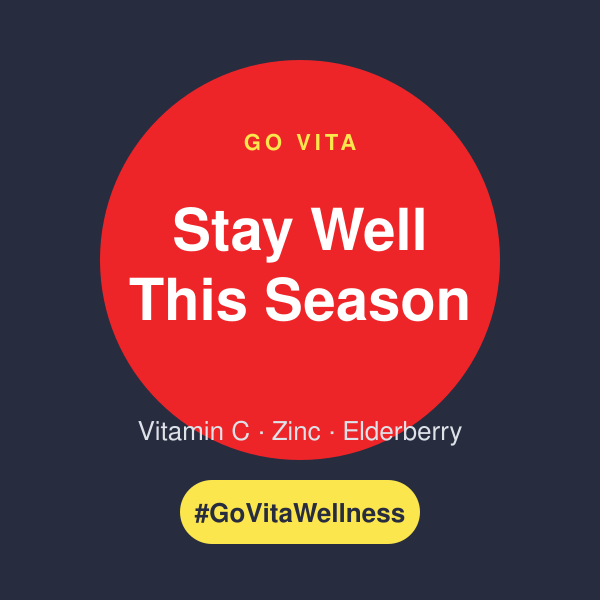
Stay Well social tile
Social media · SVG · 1:1 (600×600)
Instagram/Facebook square with #GoVitaWellness. Pair with your product photo.
Winter campaign
assets/marketing/social-tile-immune.svg
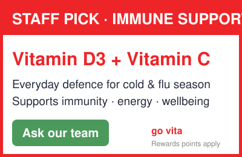
Immune Support shelf talker
Shelf signage · SVG · A6 (400×260)
Staff-pick talker for immune vitamins (Vitamin D3 + C). Cold & flu season messaging for the vitamin bay.
Winter campaign
assets/marketing/shelf-talker-immune-vitamins.svg
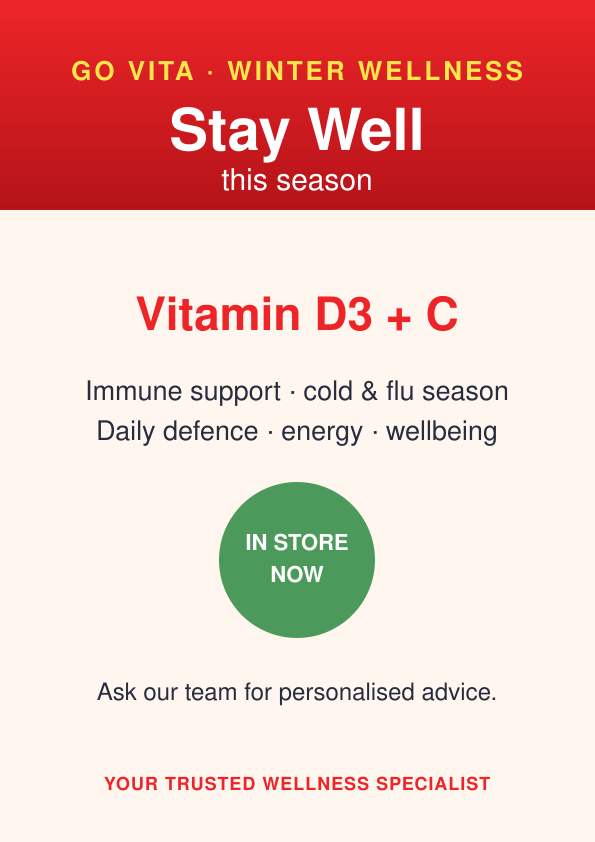
Winter Wellness window poster
Window posters · SVG · A4 (595×842)
Stay Well This Season poster featuring Vitamin D3 + C immune support. Store windows; scales to A3.
Winter campaign
assets/marketing/poster-winter-wellness-immune.svg
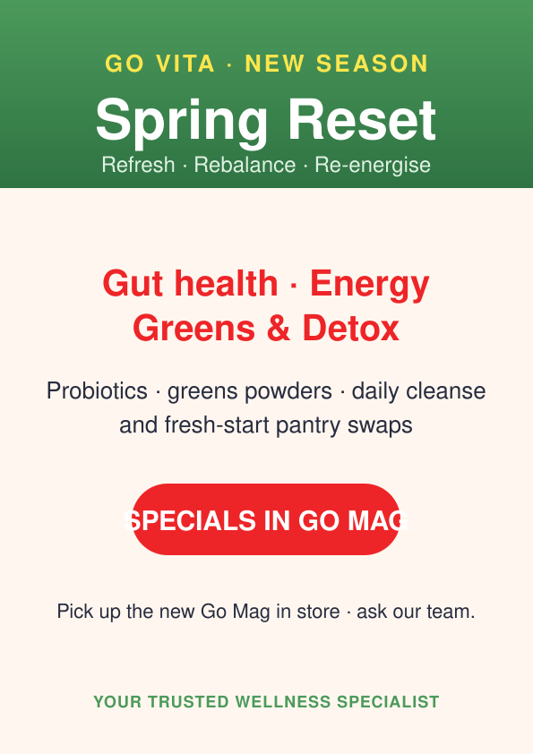
Spring Reset window poster
Window posters · SVG · A4 (595×842)
New-season poster — gut health, energy, greens & detox. Points customers to the Go Mag specials.
New season
assets/marketing/poster-spring-reset.svg
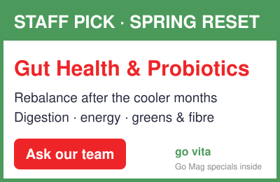
Spring Reset shelf talker
Shelf signage · SVG · A6 (400×260)
Staff-pick talker for gut health & probiotics — rebalance, digestion, greens & fibre.
New season
assets/marketing/shelf-talker-spring-reset.svg
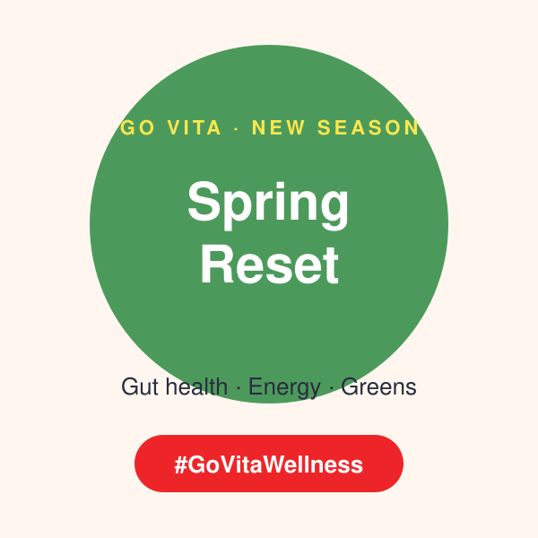
Spring Reset social tile
Social media · SVG · 1:1 (600×600)
New-season square with #GoVitaWellness. Pair with a fresh produce / greens photo.
New season
assets/marketing/social-tile-spring-reset.svg
Spring Reset web banner
Web banners · SVG · 1200×400
New-season leaderboard promoting Spring Reset and the new Go Mag. Website hero / newsletter / screens.
New season
assets/marketing/banner-spring-reset.svg
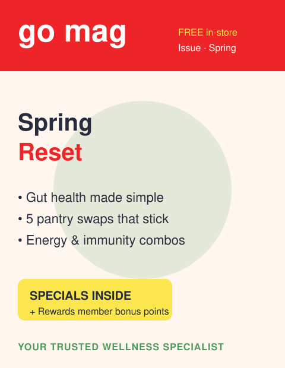
Go Mag — current issue
Publications · SVG · 480×620
Spring Reset cover of the free in-store magazine. Specials inside + Rewards bonus points.
Spring
assets/marketing/gomag-cover-current.svg
Brand guidelines
Keep Go Vita instantly recognisable. Use the official palette and respect logo clear space.
| Colour | Hex | Use |
|---|---|---|
| Go Vita Red | #EE2528 | Primary brand colour, logos, headlines, CTAs |
| Charcoal | #282C3F | Body text and dark backgrounds |
| Wellness Green | #4C9A5B | Natural / health accents, sub-brands |
| Rewards Gold | #F5C518 | Go Vita Rewards & specials flags |
| Warm Cream | #FFF7EF | Soft backgrounds for print |
| White | #FFFFFF | Reverse logo / clear space |
Logo rules: keep clear space equal to the height of the leaf mark · use the reverse logo on dark/photographic backgrounds · never stretch, recolour or add effects · minimum 120px wide on screen (30mm in print). Headlines in heavy sans-serif; tagline line: Your Trusted Wellness Specialist.
Campaign calendar
| Campaign | When | Theme | Assets | Status |
|---|---|---|---|---|
| New Year Detox / Reset | Jan–Feb | Cleanse, gut & liver, greens | Window poster | Ready |
| Winter Wellness | Jun–Aug | Immune, cold & flu, vit C & D | Banner, social tile | Ready |
| Spring Reset (Go Mag) | Sep–Oct | Gut health, energy, pantry swaps | Go Mag cover | Ready |
| Go Vita Rewards | Year-round | Earn & redeem points, bonus offers | Rewards lockup | Always-on |
What members say
“The seasonal poster kits make our window look professional in minutes — we swap them every quarter.”
Go Vita Toowoomba, Regional QLD · GV-1023 · ★★★★★
“Shelf talkers lift our staff-pick sales noticeably. Customers trust the recommendation.”
Go Vita Geelong, Regional VIC · GV-1052 · ★★★★★
“Having the logos and social tiles ready to download saves us hours every week.”
Go Vita Glenelg, Adelaide SA · GV-1031 · ★★★★★
“Go Mag is still our best in-store conversation starter. Members come in asking for the specials.”
Go Vita Noosa, Sunshine Coast QLD · GV-1078 · ★★★★★
How to request an asset
Data source for this page: data/marketing-assets.json — the live marketing catalogue
maintained by Cindy (Marketing Coordination).